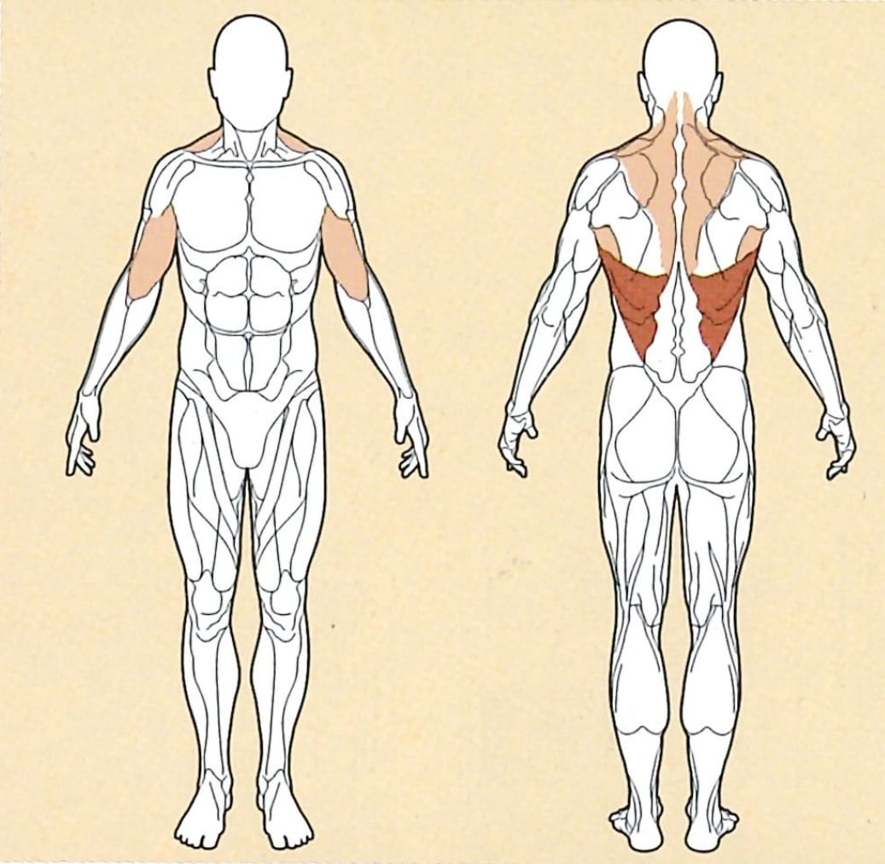

Klimmzug

Ausgangsposition
● Mit gewünschter Griffposition an die Maschine hängen, und die Füße verschränken um eine gute
Stabilisation zu ermöglichen
● Du hast fünf verschiedene Griffe zur Vefügung, welche sich am MI7 TRAINING SYSTEM befinden
Ausführung
Drücke dein Brustbein nach oben, und spanne deinen Rückenmuskel an.
Ziehe dich nun nach oben, bis dein Kinn sich über deinen Händen befindet.
Ziehe deine Schulterblätter zusammen um so die
gewünschte Spannung im Rücken zu bilden.
Rückführung
Lasse nun deinen Körper wieder nach unten, bis du dich wieder in der Ausgangsposition
befindest.
Hierbei ist wichtig, dass du deinen Rücken in der Ausgangsposition wieder vollkommen entspannst.